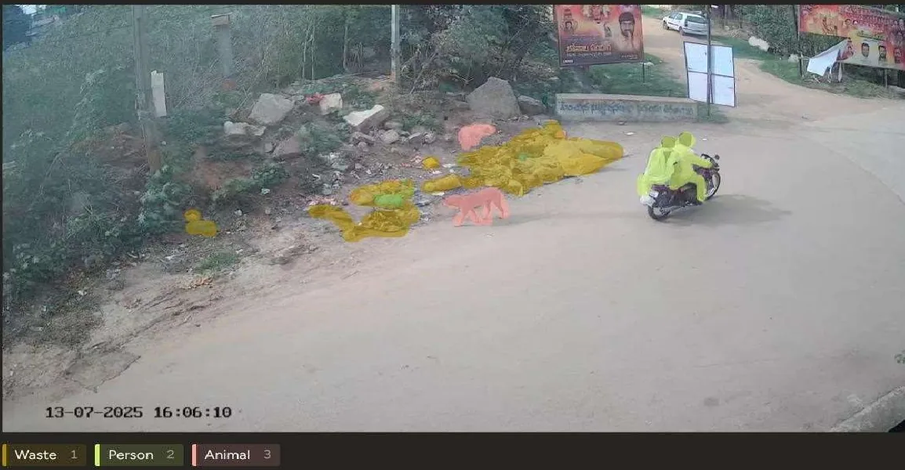
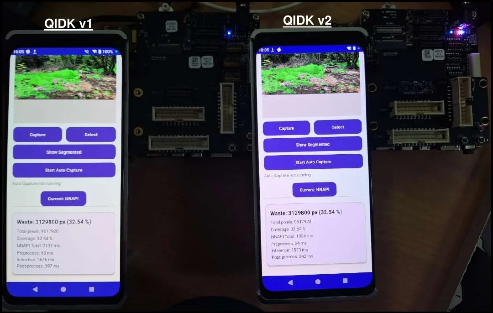
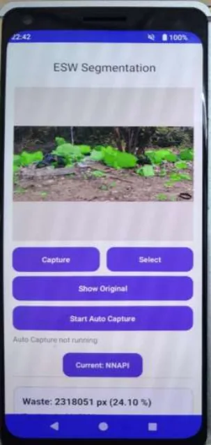
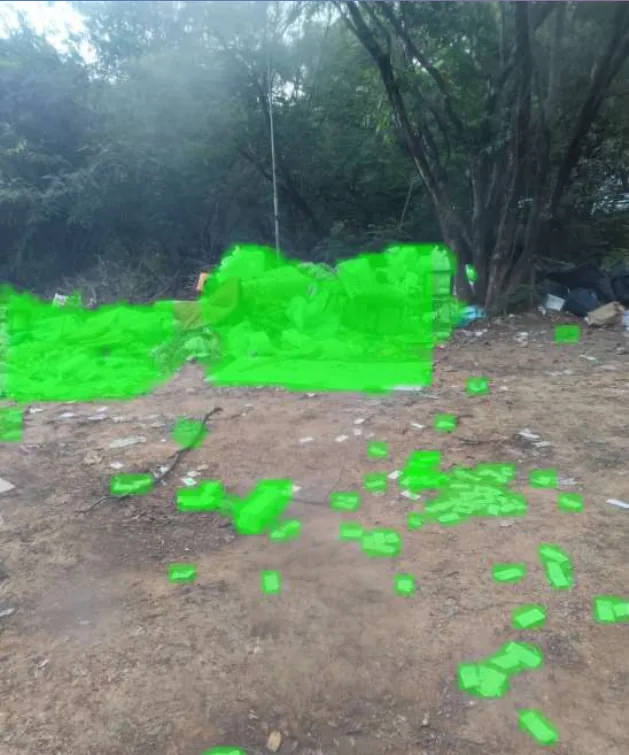
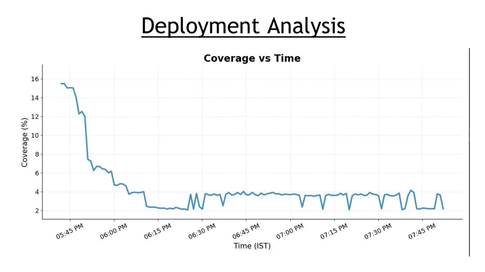
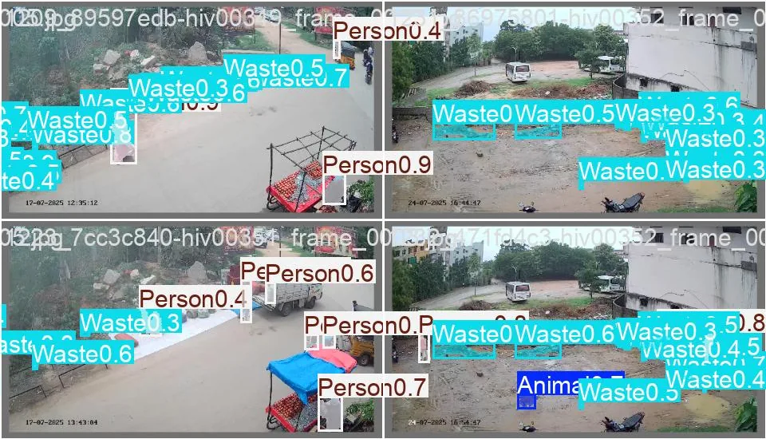
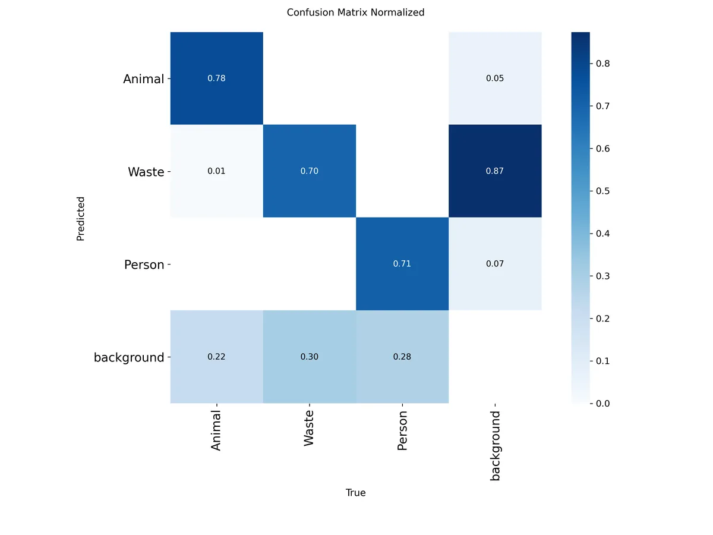

Garbage monitoring on the edge
City cameras watch the corners where garbage gets dumped. This system segments every frame into waste, people and animals on a Qualcomm dev kit, then reports how much of the scene is covered, without sending video anywhere.

The problem
Garbage vulnerable points are the spots where waste keeps being dumped. The brief was to watch them with a camera and measure the area and amount of garbage, and how dumping changes over time, on a QIDK board with low enough latency to run continuously.
Measuring area rules out the usual answer. Bounding boxes around irregular piles of rubbish swallow the road around them: on this data, boxes overestimated the garbage area by 65.2%. So the system segments pixels instead of drawing boxes.
| Class | Segmentation pixels | Bounding-box pixels |
|---|---|---|
| Waste | 44,222,559 | over 132 million |
| Person | 4,183,114 | 7,897,934 |
| Animal | 1,364,056 | 2,218,330 |
Data and five models
The dataset came from three places: over 1,500 CCTV frames from two dumping spots in the city, provided by the course, over 100 photos taken on campus, and over 100 from the web for variety. The team annotated all of them in Label Studio into three classes.
Five segmentation models were trained through Qualcomm AI Hub and compared on mean IoU and F1. YOLOv11 won, though only narrowly on F1 over YOLOv8. It was chosen for its accuracy together with its speed, memory footprint and support on Qualcomm's NPU.
| Model | Mean IoU | F1 |
|---|---|---|
| YOLOv11 | 0.75 | 0.69 |
| YOLOv8 | 0.72 | 0.69 |
| FCN ResNet50 | 0.61 | 0.66 |
| DDRNet23-Slim | 0.50 | 0.66 |
| U-Net | 0.49 | 0.60 |
On the device


- The Kotlin app captures with CameraX or takes a gallery image, letterboxes it to 640 by 640, and runs a memory-mapped YOLOv11 TensorFlow Lite model.
- It sets up three interpreters and prefers the GPU delegate, then NNAPI, then the CPU, because accelerator support varies from device to device.
- Each result is saved locally as an image and a CSV row, and pushed to Firebase with the coverage, timing, delegate and per-class breakdown. An auto-capture timer keeps it running unattended.
init { try { logDeviceInfo() val modelFile = loadModelFile(context) // Setup TFLite GPU delegate (OpenGL/Vulkan) setupTFLiteGpuInterpreter(modelFile) // Setup NNAPI (may route to vendor accelerator if available) setupNNAPIInterpreter(modelFile) // Always setup CPU as fallback setupCPUInterpreter(modelFile) // Set initial delegate based on availability (prefer TFLite GPU > NNAPI > CPU) currentDelegate = when { gpuAvailable -> DelegateType.GPU nnapiAvailable -> DelegateType.NNAPI else -> DelegateType.CPU }Three interpreters, one preference order: GPU, then NNAPI, then CPU.
private fun postProcessOutputs( originalBitmap: Bitmap, detections: Array<FloatArray>, masks: Array<Array<FloatArray>> ): Bitmap { val detectedObjects = mutableListOf<Detection>() val confidenceThreshold = 0.05f val iouThreshold = 0.45f val numClasses = classLabels.size val numCoefficients = 32 for (i in 0 until 8400) { val x = detections[0][i] * INPUT_SIZE val y = detections[1][i] * INPUT_SIZE val w = detections[2][i] * INPUT_SIZE val h = detections[3][i] * INPUT_SIZE var maxScore = -1.0f var classId = -1 for (j in 0 until numClasses) { val score = detections[4 + j][i] if (score > maxScore) { maxScore = score classId = j } } if (maxScore > confidenceThreshold) { val maskCoeffs = FloatArray(numCoefficients) { k -> detections[4 + numClasses + k][i] } detectedObjects.add(Detection(x, y, w, h, maxScore, classId, maskCoeffs)) } } val finalDetections = applyNMS(detectedObjects, iouThreshold) return drawMasksOnly(originalBitmap, finalDetections, masks)Decoding YOLO's 8,400 candidates, each with class scores and 32 mask coefficients, before non-maximum suppression.
In the field

The app logged coverage through the evening, from about a quarter to six until nearly eight. The report also timed the whole pipeline on each device.
| Device | Time |
|---|---|
| QIDK, NPU | 2,076 ms |
| QIDK, CPU | 2,206 ms |
| Raspberry Pi 4 | 17,054 ms |
The QIDK came out about eight times faster than the Raspberry Pi 4, which the report puts down to the Pi's older CPU and its lack of optimised ML kernels.

A second experiment
The GVP repo carries the work on as a separate, cleaner comparison on about 1,600 images with a fixed 70/15/15 split: an instance model, YOLO11s-seg, against a semantic one, a UNet with a ResNet34 encoder. To score them the same way, YOLO's instance masks are collapsed into a single class mask and both are measured with the same pixel IoU on the test set.
Its numbers are not comparable with the table above: different data, split and metric.
| Class | YOLO11s-seg | UNet ResNet34 |
|---|---|---|
| Waste | 0.567 | 0.648 |
| Person | 0.440 | 0.335 |
| Animal | 0.325 | 0.053 |
| Mean, without background | 0.444 | 0.345 |
Animals are 0.07% of all pixels, and a plain per-pixel UNet almost never learned them. YOLO, which finds objects first, did far better there. UNet edged ahead on waste, the large dense regions per-pixel classification suits.


def run_yolo_inference(img_bgr): h, w = img_bgr.shape[:2] results = _yolo_model.predict(source=img_bgr, verbose=False) r = results[0] class_mask = np.zeros((h, w), dtype=np.uint8) instance_count = {name: 0 for name in CLASS_MAP.values()} if r.masks is not None: for mask, cls in zip(r.masks.data, r.boxes.cls): cls_id = int(cls) m = cv2.resize(mask.cpu().numpy(), (w, h)) class_mask[m > 0.5] = cls_id + 1 instance_count[CLASS_MAP[cls_id]] += 1 overlay = _make_overlay(img_bgr, class_mask) stats = _compute_stats(class_mask)The demo app's API collapses instance masks into one class mask, the same way the comparison does.
Decisions the team documented
Segment, don't box
Boxes overestimated waste area by 65.2%, and area is the number the project exists to measure.
Report, section III.B
YOLOv11 for the hardware, not the score
F1 was level, so the choice came down to speed, memory and NPU support on the target hardware.
Report, section VII.B
Three sources of images
Two fixed CCTV spots would overfit, so campus and web photos were added for different scenes.
Report, section III.A
A fallback chain for accelerators
GPU, NNAPI and CPU interpreters are all prepared with warm-up runs, and the user can switch between them.
SegmentationHelper.kt
Built with
- Android
- Kotlin, CameraX, TensorFlow Lite with GPU and NNAPI delegates
- Models
- YOLOv11, YOLOv8, FCN ResNet50, DDRNet23-Slim, U-Net via Qualcomm AI Hub
- Comparison
- Ultralytics, PyTorch, segmentation-models-pytorch, FastAPI, React
- Data
- Label Studio, Firebase Realtime Database and Storage